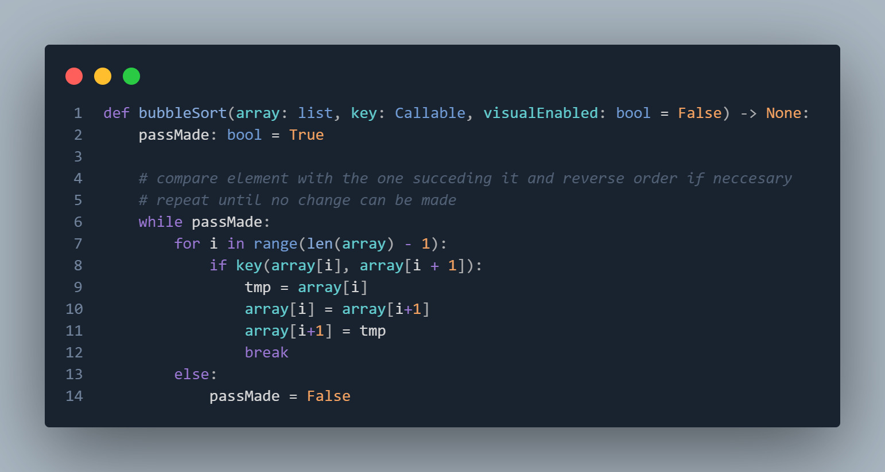

Bubblesort Rendezési Algoritmus
Hatékonyság, tárigény, megvalósítás

Bubblesort algoritmus
A Bubble Sort egy egyszerű rendezési algoritmus, amely ismételten végigmegy a listán, és az egymás melletti elemeket összehasonlítja, majd cseréli, ha nincsenek a megfelelő sorrendben. A folyamat addig ismétlődik, amíg a lista teljesen rendezetté nem válik.
Az algoritmus nevét onnan kapta, hogy a nagyobb elemek a végére "buborékolnak" a lista minden végigmenete során.
Működésének fő lépései
- Összehasonlítás és csere: Az algoritmus a lista elején kezd, és minden egyes szomszédos elempárt összehasonlít. Ha a bal oldali elem nagyobb, mint a jobb oldali, akkor megcseréli őket.
- Ismétlés: Az algoritmus újra és újra végigmegy a listán, amíg nem történik több csere, ami azt jelzi, hogy a lista teljesen rendezett.
- Optimalizáció (opcionális): Az algoritmus módosítható úgy, hogy egy jelzőt (flag-et) használjon, amely nyomon követi, történt-e csere egy adott végigmenet során. Ha nem történt csere, az algoritmus idő előtt leállítható, mivel a lista már rendezett.



Hatékonysága és Tárigénye
Hatékonysága
A Bubble Sort időbeli hatékonysága a következőképpen alakul:
- Legrosszabb eset: Amikor a lista elemei teljesen fordított sorrendben vannak, az algoritmusnak minden egyes elemet végig kell néznie, és végig kell cserélnie. Ekkor a legrosszabb eset időbeli komplexitása O(n²), ahol n a lista elemeinek száma. Mivel minden végigmenet során egyre kevesebb elem kerül a helyére, ezért az algoritmus mindig n elemű összehasonlításokat és cseréket hajt végre.
- Legjobb eset: Amikor a lista már eleve rendezett, az algoritmus első végigmenete során nem történik csere, így az algoritmus azonnal befejeződik. Ez esetben a legjobb eset időbeli komplexitása O(n), mivel csak egyszer megy végig a listán.
- Átlagos eset: A legtöbb esetben, amikor a lista elemei részben rendezettek vagy véletlenszerűen vannak elrendezve, az átlagos futásidő szintén O(n²).
Idő- és tárigény
A Bubble Sort tárigénye rendkívül kedvező, mivel egy in-place algoritmus, ami azt jelenti, hogy nincs szükség további memóriaterületre a rendezés során.
Tárkomplexitás: O(1), mert a Bubble Sort nem használ extra memóriát a bemeneti lista rendezéséhez (azonos memóriaterületen dolgozik).